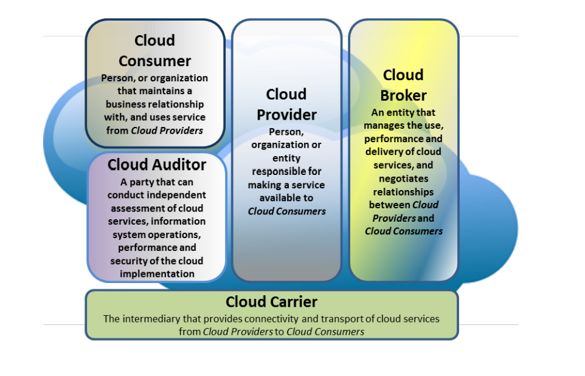
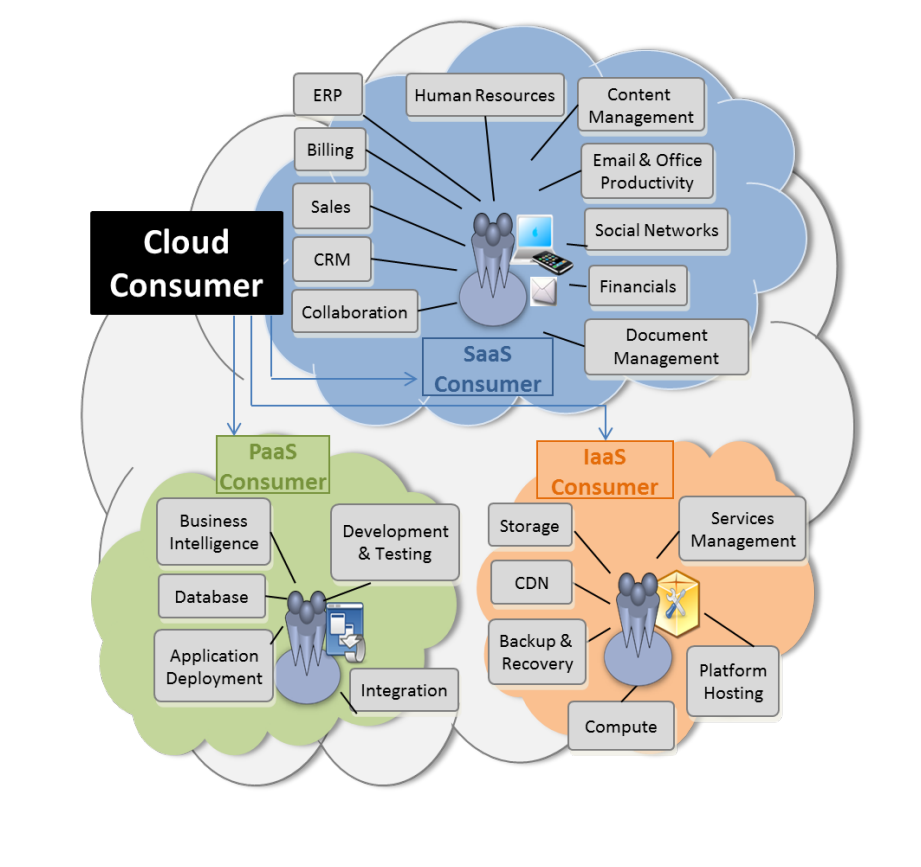
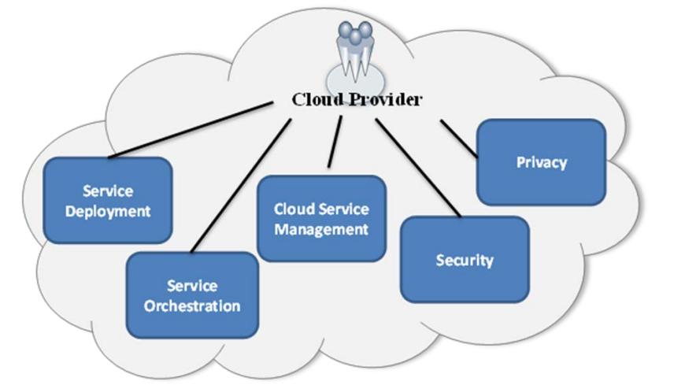
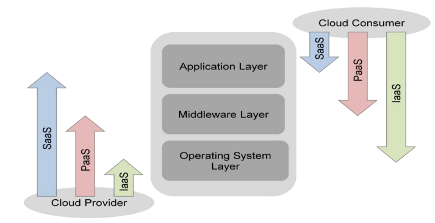

Cloud Computing Reference Architecture
Expert View – Why Reference Architecture
While designing large-scale cloud systems, I observed that lack of a common architectural framework often leads to miscommunication, poor design decisions, and security gaps.
Cloud Computing Reference Architecture provides a standardized way to describe, discuss, and design cloud systems using a common conceptual model.
NIST Cloud Computing Reference Architecture
The NIST Cloud Computing Reference Architecture is a vendor-neutral, high-level conceptual model that defines cloud actors, activities, and functions.The model is not tied to any specific vendor products, services, or reference implementation, nor does it define prescriptive solutions that inhibit innovation. It defines a set of actors, activities, and functions that can be used in the process of developing cloud computing architectures, and relates to a companion cloud computing taxonomy. It contains a set of views and descriptions that are the basis for discussing the characteristics, uses, and standards for cloud computing.

Cloud Consumer
A cloud consumer can be an individual, organization, or user group that consumes cloud services for business or personal use.
Cloud Provider
A cloud provider is responsible for delivering cloud services including deployment, orchestration, management, security, and privacy.
Service Deployment Models
- Public Cloud
- Private Cloud
- Hybrid Cloud
- Community Cloud
Service Orchestration
Cloud providers use cloud operating systems such as OpenStack or CloudStack built on virtualization and multitenancy.1. Virtualization: Cloud Operating system implements the hypervisor orchestration facilities. These Hypervisors powers IaaS service delivery models. 2. Multitenancy: Multitenancy is when several different cloud customers are accessing the same computing resources, such as when several different companies are storing data on the same physical server.
Cloud Service Management
Almost Every cloud provide has provide the interface through which cloud consumer can provision and manage their IT infra or cloud resources.Every public cloud provide several interfaces for Cloud management:
- Portal (GUI)
- Cloud Shell
- Cloud SDK
- Cloud CLI
Cloud Consumption is subject to professional expertise and consultation. There is lot of jargon like cloud management, provisioning and more. To give you the glimpse here is example.
When you adopt Cloud for Business. first thing comes provisioning of cloud resources, then configuring and managing cloud users access control so that other team can only access what they need to support in routine business support2, Integration with other services on same cloud or other provides or sometimes with onprem services as well, design and implement Monitoring solution and setting up alert for resource Health and cost and billing, setting up budgets, managing security and privacy of cloud resources and many more other administrative and Architecture knowledge required in order to fully benefit from the cloud services.
Security and Privacy – Shared Responsibility Model
Cloud security follows the shared responsibility model which clearly separates provider and consumer responsibilities.
If you are IaaS Consumer:
Provider's Responsibility:
Provider is responsible for managing(updating, upgrade and patching) a Hardware(CPU, Storage and Connectivity) and Hypervisor. Provider is responsible for securing the infra below the Operation system(OS not included).
Consumer's Responsibility:
In IaaS, Consumer has complete Control over the Operating system. Consumer is responsible for securing the OS(deploying security patches, update and upgrades).
If you are PaaS Consumer:
Provider's Responsibility:
Cloud Provider is responsible securing the infra below and up to the OS (os included) level.
Consumer's Responsibility:
Consumer's responsibility is configure, install software packages or running software on the os. Consumer need to follow the security and privacy guidelines and best practices recommended by the provide.
If you are SaaS Consumer:
Provider's Responsibility:
Service provider is responsible for managing all the underlying infra of the service. it also responsible for security and privacy from external bad actors excluding security vulnerabilities subject to creep due to lose configuration and customizations.
Consumer's Responsibility:
Saas Consumers are responsible for provisioning the service, configuring and making customizations to get personalized consumer experience. even though consumer is not responsible for managing vulnerabilities creeps due the underlying infra but It strongly recommended to make sure that consumer must understand the vulnerabilities creep or security and privacy risk which comes due to loose configuration and customizations in the service. Consumer must have plan to mitigate these security and privacy threats.
Cloud Broker
Cloud Broker is a company or individual who act as intermediary between the cloud provider and consumer. Sometime Cloud provide is invisible to the cloud Consumer.
Cloud Brokerage firm can be setup in one of 3 ways.
Intermediation: A cloud broker enhances a given service by improving some specific capability and providing value-added services to cloud consumers. The improvement can be managing access to cloud services, identity management, performance reporting, enhanced security, etc.
Aggregation: A cloud broker combines and integrates multiple services into one or more new services. The broker provides data integration and ensures the secure data movement between the cloud consumer and multiple cloud providers. For Example: SaaS solution like Salesforce, ServiceNOW and Netflix OTT platform. Cloud Marketplaces on AWS, Azure and GCP are also used for providing Cloud Aggregated Services.
Arbitrage: Service arbitrage is similar to service aggregation except that the services being aggregated are not fixed. Service arbitrage means a broker has the flexibility to choose services from multiple agencies. The cloud broker, for example, can use a credit-scoring service to measure and select an agency with the best score.
- Intermediation
- Aggregation
- Arbitrage
Cloud Auditor
Cloud Auditor
Cloud Auditor is company which acts as a trust builder between Cloud provider and Consumer.
A cloud auditor is a party that can perform an independent examination of cloud service controls
with the intent to express an opinion thereon. Audits are performed to verify conformance to standards
through review of objective evidence. A cloud auditor can evaluate the services provided by a cloud
provider in terms of security controls, privacy impact, performance, etc
Cloud Carrier
Cloud Carries is company who act as supplier to the cloud provider for the connectivity and transportation infra of the services over internet. Cloud carriers provide access to consumers through network, telecommunication and other access devices.
Final Summary
Cloud Computing Reference Architecture provides a structured understanding of cloud ecosystems by clearly defining roles, responsibilities, and interactions.